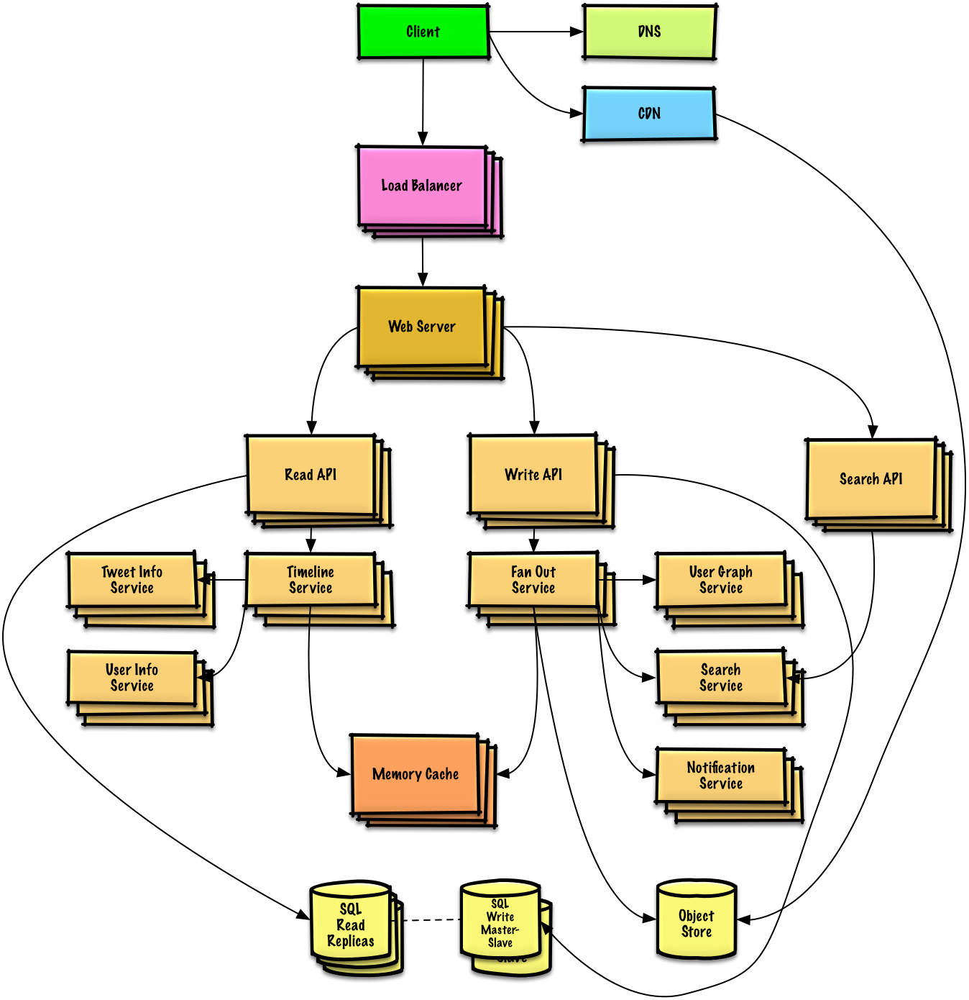
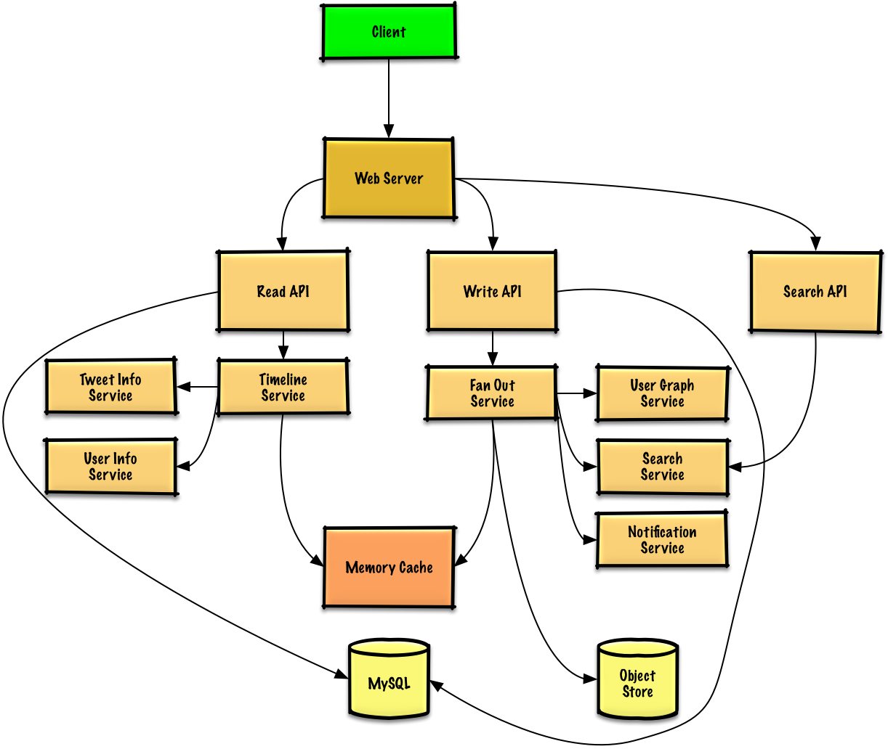

MODULE 14 · SYSTEM DESIGN SOLUTION
Solution to the exercise: "Design the Twitter timeline and search"
Same shape of question as "design the Facebook feed" or "design Facebook search" — the hard part isn't storing a tweet, it's getting that tweet in front of every follower, fast, without melting your database.
Out of scope: the public Firehose stream, visibility/reply-hiding rules, analytics.
Twitter is far more read-heavy than write-heavy, so reads need to be cheap — but the fanout write (one tweet → thousands of timeline inserts) is the one write path that can genuinely overload a naive design.

A relational database is fine for a user's own tweet history (their user timeline). It is not fine for building everyone's home timeline — fanning one tweet out to thousands of followers (60k/sec at peak) needs something with fast writes: a NoSQL store or a memory cache (reading 1 MB sequentially from memory takes ~250μs vs. 4x on SSD and 80x on disk, so keeping the hot path in memory is what makes this tractable). Media goes to an Object Store.
If the Memory Cache is Redis, a native Redis list works well for a timeline — a tight packed structure per tweet:
tweet n+2 tweet n+1 tweet n | 8 bytes 8 bytes 1 byte | 8 bytes 8 bytes 1 byte | 8 bytes 8 bytes 1 byte | | tweet_id user_id meta | tweet_id user_id meta | tweet_id user_id meta |
Public REST API:
$ curl -X POST --data '{ "user_id": "123", "auth_token": "ABC123",
"status": "hello world!", "media_ids": "ABC987" }' \
https://twitter.com/api/v1/tweet
→ { "created_at": "Wed Sep 05 00:37:15 +0000 2012", "status": "hello world!",
"tweet_id": "987", "user_id": "123", ... }
Internal service-to-service calls would reasonably use RPC instead of REST (Module 10 covers that tradeoff).
Client → Web Server → Read API → Timeline Service, which: reads tweet ids + user ids for this user from the Memory Cache (O(1)), then multigets the actual tweet bodies from the Tweet Info Service (O(n)) and the author details from the User Info Service (O(n)).
$ curl https://twitter.com/api/v1/home_timeline?user_id=123
→ [{"user_id":"456","tweet_id":"123","status":"foo"},
{"user_id":"789","tweet_id":"456","status":"bar"}, ...]
Same path, but the Read API pulls straight from the SQL database instead of the fanout cache — these are just the user's own tweets, already stored there.
Client → Web Server → Search API → Search Service, which: tokenizes the query (strip markup, split into terms, fix typos, normalize case, convert to boolean operators), then scatter-gathers the query across a Search Cluster (e.g. Lucene-based), merging, ranking and sorting the results before returning them in the same shape as a timeline response.

Reused talking points, covered in their own modules — DNS/CDN (04), Load balancing & horizontal scaling (05), Caching (08), RDBMS replication (07), Consistency & Availability patterns (03).
The Fan Out Service is the standout bottleneck here: a user with millions of followers can take minutes to fully fan out, which creates a race condition where @replies can arrive before the original tweet is visible everywhere (fixable by re-ordering at serve time). One mitigation: don't fan out tweets from extremely high-follower accounts at all — instead, merge their tweets into a follower's timeline via search at read time.
Further optimizations: keep only a few hundred tweets per home timeline in cache; cache only active users (rebuild a dormant user's timeline from SQL on demand by re-querying the User Graph Service); keep only ~a month of tweets in the Tweet Info Service and only active users in the User Info Service; keep the Search Cluster's index in memory to hold latency down. For the SQL layer itself, read replicas alone likely won't absorb the cache-miss load, and a single write master won't absorb the write volume — so Module 07's Federation, Sharding, Denormalization and SQL tuning all come back into play, alongside moving some data to NoSQL entirely.
Next in Module 14: Web crawler. Previous: Pastebin.